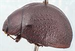
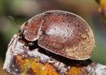
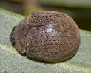
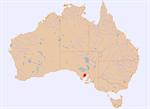

Click on images to enlarge


Female, Kimba, Eyre Peninsula, South Australia


Female, Cleve, Eyre Peninsula, South Australia


Female, Kimba, Eyre Peninsula, South Australia


Distribution
Name
Trachymela sp. Ta108
Reference specimen
2017-174, Kimba, Eyre Peninsula, South Australia.
Adult Description
Length: ♂ unknown (n=0), ♀ 8.6–8.7 mm (n=2).
Colouration:
- Head: dark brown, with clypeus slightly darker, labrum dark brown or slightly paler, mandibles dark brown with black tips; antennomeres 1–3 light- to mid-brown, 4–6 grading darker brown, 7–11 black.
- Pronotum: dark brown, concolorous with rear of head with anterior margin behind head sometimes slightly darker, lateral edge black.
- Scutellum: dark brown, concolorous with adjacent area of pronotum, rimmed with a darker shade.
- Elytra: uniformly dark brown, concolorous with disc of pronotum, humeral callus concolorous with or fractionally darker than surrounding surface.
- Venter & Legs: dark reddish-brown, with areas of thoracic segments and legs often even darker, inside surface of elytral epipleura brown.
- Cuticular Wax: light brown, a very light but relatively even covering over head, pronotum and most of elytra, with posterior third of elytra generally having a higher density.
Morphology:
- Head: body evenly rounded from scutellum to close to elytral apex, where curvature increases noticeably, strongly convex (H/BL: ♂ unknown, ♀ 0.52), highest point around middle of elytral margin (PGH: ♂ unknown, ♀ 53.8% BL); punctures fine (pd ≈ 1.5–2.0 × ef) and quite evenly and densely distributed. Antennae long (AL/BL: ♂ unknown, ♀ 36.5%), A4 ≈ A3, filiform.
- Pronotum: almost evenly curved transversely, foveal depression absent, surface of marginal area almost imperceptibly elevated, punctures on disc clearly impressed, similar in size to those on head, closely and rather evenly distributed, punctures gradually becoming considerably coarser from inside margin of foveal area towards lateral margin. Front margins join lateral margins in a smoothly rounded right-angle, with lateral margin initially almost straight for about 40% of length, then curving smoothly and gradually towards the much thicker rear margin.
- Scutellum: surface uneven, unpunctured or with a few large but very indistinct and lightly impressed punctures.
- Elytra: surface evenly curved, punctures quite small and mostly poorly defined on a wrinkled surface except over a band along elytral suture from scutellum to just past summit, where they are much clearer, closely spaced (PC ≈ 72/mm²); about 5 longitudinal series of small, round (diameter ≈ 3–5 pd), completely smooth and gently rounded verrucae present on disc, conspicuous by the relatively uniform spacing of the verrucae within them; surface slightly discontinuous under humeral callus. Lateral margin almost straight, vertical extension of epipleura moderate (HCE/PW = 0.34).
- Venter: prosternal process narrowest anteriorly, closed anteriorly, short setae present sparsely over prosternal process and mesoventrite, one long seta on anterior and median trochanter, one on posterior trochanter; front edge of metaventrite beveled, truncate; a line of setae extending forward from elytral apex along inner edge of epipleura to about level of middle of 1st abdominal segment.
Male Genitalia (Aedeagus):
Unknown.
Immature Stages
Unknown.
Similar species
- Ta139: The verrucae on the elytra of this species are more variable in size and shape than the very regular rows of evenly sized ones present on Ta108. In addition, Ta139 has black inner epipleura.
- Ta107, Ta123: Ta108 can be differentiated from both these species by its possession of rows of regularly sized and smooth verrucae, and the brown inner epipleura.
Notes
- Taxonomy: Member of the alta-group of species, distinctive by its possession of rows of smooth, relatively large and very lightly elevated verrucae, as well as its brown inner epipleural surface.
- Distribution & Abundance: Known from only two female specimens (one of which is teneral).
- Host Associations: Both known specimens of Ta108 were collected from Eucalyptus calycogona (Symphyomyrtus: Bisectae: Destitutae).
- Morphological Variation: The vertical section of the epipleura in the posterior half of the elytra is rather narrow.
Copyright © 2026. All rights reserved.